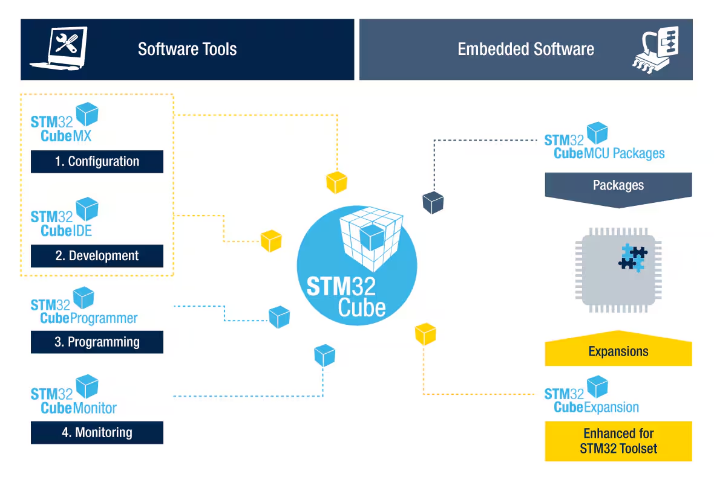

Release Notes for
X-CUBE-ST67W61 Expansion Software Package
Copyright © 2024 STMicroelectronics
Purpose
The X-CUBE-ST67W61 expansion software package is a set of software components implementing host applications driving a Wi‑Fi® and Bluetooth® LE coprocessor (ST67W611M1).
It runs on STM32 Nucleo boards and is designed to be used with the X-NUCLEO-67W61M1 expansion board in using the Middleware ST67W6X_Network_Driver as a communication interface.
Minimal memory requirements for host device are 48kB RAM and 256kB Flash.
Some pins are used to connect the X-NUCLEO-67W61M1 expansion board to the STM32 Nucleo board in using the Arduino connectors.
The table below shows the GPIO pin configuration:
| Pin function | NUCLEO pin name | GPIO mode | GPIO pull mode | GPIO speed |
|---|---|---|---|---|
| SPI_CLK | D13 | AF PP | No pull | Very high |
| SPI_MISO | D12 | AF PP | No pull | Very high |
| SPI_MOSI | D11 | AF PP | No pull | Very high |
| SPI_CS | D10 | Output PP | No pull | High |
| USER_BUTTON (*) | D8 | EXTI Falling | Pull-up | N/A |
| CHIP_EN | D5 | Output PP | No pull | High |
| BOOT | D6 | Output PP | No pull | Low |
| SPI_RDY | D3 | EXTI Falling/Rising | No pull | N/A |
(*) USER_BUTTON refers to the blue button mounted on the X-NUCLEO-67W61M1.
The user button on the STM32 Nucleo board is not used as external interrupt mode due to conflict with other EXTI pin requirement.
The expansion software package is built on STM32Cube software technology to ease portability across different STM32 Microcontrollers.
The software comes with a sample implementation of the Middlewares running on multiple STM32 Nucleo development boards connected to a X-NUCLEO-67W61M1 expansion board.

Repository structure
The STMicroelectronics X-CUBE-ST67W61 content consists of the following directories:
- Drivers: contains CMSIS, HAL and BSP drivers.
- Middlewares: contains ST67W6X_Network_Driver, FreeRTOS, cJSON, LittleFS and TraceRecorder.
- Projects: provides ready-to-run applicative examples for X-NUCLEO-67W61M1 on the supported boards.
- Utilities: contains some STM32 miscellaneous utilities.
Documentation
For further information, refer to UM3475 Getting started with X-CUBE-ST67W61.
Please visit the dedicated Wiki page Wiki Connectivity Wi-Fi.
Update History
Main Changes
- Projects
- Applications
- ST67W6X_BLE_Commissioning
- ID 214212: Add BLE FUOTA support
- ID 216125: Clear security database on button push
- ST67W6X_BLE_p2pClient
- ID 213161: Improve services and characteristics discovery process to use service UUID to discover p2p service
- ST67W6X_BLE_p2pServer
- ID 216125: Clear security database on button push
- ST67W6X_CLI_LWIP
- ID 211434: Add CLI application based on LwIP on host and ST67 T02 architecture
- ST67W6X_FOTA
- ID 211255: ST67W6X_FOTA - Fix host rebooting even when no FOTA update was applied due to version check
- ID 214113: ST67W6X_FOTA - Remove modulo 4 constraints on buffer size when STM32 FLASH write
- ST67W6X_WiFi_Commissioning
- ID 211179: Fix incorrect variable declaration that leads to unexpected behaviors
- ID 216918: Fix credential parsing that corrupt the password
- All applications
- ID 214320: Move of API calls from W6X event callbacks to the default task due to the modem_handler task not being reentrant
- ST67W6X_BLE_Commissioning
- Demonstrations
- ST67W6X_MQTT_LWIP
- ID 215693: Add MQTT demonstration based on LwIP on host, MQTT-C Third-Party Middleware and ST67 T02 architecture
- ST67W6X_MQTT_LWIP
- Host boards
- NUCLEO-H563ZI and NUCLEO-N657X0-Q
- ID 212064: Keep SPI IO state configuration enabled to prevent MOSI floating line on SPI Bus
- NUCLEO-N657X0-Q
- ID 217411: Add minimal 2us delay in SPI port for N6 DCache enabled
- NUCLEO-H563ZI and NUCLEO-N657X0-Q
- Applications
- ST67W6X_Network_Driver
- Wi-Fi
- ID 210980: Fix wrong status message returned by scan command when several scans are sent in a row
- ID 212466: TWT frames sent only to APs with TWT support
- ID 213724: Maximum of Wi-Fi scan results reduced to 20 devices
- ID 214286: Remove the IP address compatibility check from WiFi cb to dissociate WiFi module from Net module
- ID 216134: The DTIM parameter used on Station side is now a factor of the Access Point DTIM, to be in phase with Access Point DTIM beacons
- ID 216480: The soft Access Point protocol configuration is now a parameter when starting a soft Access Point. Station protocol configuration has been removed
- ID 216882: Add Wi-Fi antenna diversity automatic selection for -U and -P after Wi-Fi connection
- BLE
- ID 212742: Add BLE Shell commands to perform GATT and Security operations
- ID 213724: Maximum of BLE scan results reduced to 20 devices
- ID 215560: Add support of 2 BLE connections as Client
- ID 215563: Report remote BD address type and Long Term Key (LTK) from BLE security events
- ID 216043: BLE Init rework to ensure clock is correctly configured before entering in Low Power
- Network
- ID 210991: Improve Iperf RX throughput
- ID 212413: Fix blocking state on reception when connecting multiple UDP sockets
- ID 213424: Move IP/DNS/DHCP APIs from Wi-Fi to Net module to be compliant with LwIP on host structure project
- ID 215289: Align the IP address format order in W6X_Net APIs on LwIP usage
- ID 215983: Fix IPv6 and IPv4 string length being too small
- HTTP
- ID 211666: Increase SNI size for HTTP and choose server name as hostname when available
- ID 216816: Added the ability to send HTTP requests larger than W61_MAX_SPI_XFER
- ID 216997: Fix incorrect ALPN format for HTTPS API
- ID 217079: Fix case sensitive connection: close value in preformatted HTTP client headers
- MQTT
- ID 212696: Add support of MQTT raw data format
- ID 214875: Add support of empty MQTT message for retain feature
- ID 216425: Add support of QoS, Retain and LWT options in MQTT APIs
- Network interface
- ID 211434: Add support of LwIP on host based on ST67W611M T02 architecture
- AT Parser
- ID 214401: Integration of AT parser based on Zephyr modem cmd handler
- ID 215005: Remove maximum number of parameters limitation expected from NCP in AT parser to ensure backward compatibility even if another field is added
- System
- ID 214011: Offer capability to disable assert macros
- ID 214447: Display Module ID in banner based on Part Number
- ID 215588: Use the memcpy32 custom implementation only in spi_iface to prevent misalignment issue with limited cortex architectures
- ID 215597: RAM usage optimization in ST67W6X_Network_Driver code
- ID 216013: Modification of the W6X_FS_WriteFile API to use a certificate stored in the application or in the LFS Host
- ID 217233: Change default MAX_SPI_XFER from 6000 to 1520
- Utilities
- ID 212675: Add the possibility to the user to disable the logs for each module of the Network Driver (Wi-Fi, NET, BLE, MQTT)
- ID 214193: Addition of a define (SHELL_CMD_LEVEL) to activate all or a reduced list of shell commands
- ID 216118: Remove HAL UART dependency of shell service
- Wi-Fi
- ST67W6X Utilities
- ST67W611M Binaries updated to version 2.0.89
- Add of new ST67W611M binaries and scripts for T02 architecture (LwIP on host)
- ID 211259: Add ST67W6X_FOTA binary and FOTA HTTP server example to exercise the feature
- ID 211264: Replace WMIC by powershell command in NCP_update Windows scripts
- ID 210737: Improve python scripts provided for FOTA
Contents
Projects Ten applications and two demonstrations exercising the ST67W6X_Network_Driver capabilities, and one utility.
- Applications
- ST67W6X_BLE_Commissioning : This application aims to demonstrate the Wi-Fi credentials commissioning over Bluetooth Low Energy.
- ST67W6X_BLE_p2pClient : This application aims to demonstrate Point-to-Point communication using Bluetooth Low Energy (as GATT Client).
- ST67W6X_BLE_p2pServer : This application aims to demonstrate Point-to-Point communication using Bluetooth Low Energy (as GATT server).
- ST67W6X_CLI : This application aims to evaluate and to test the X-NUCLEO-67W61M1 Wi-Fi and Bluetooth LE solution via command line interface (CLI).
- ST67W6X_CLI_LWIP : This application aims to evaluate and to test the X-NUCLEO-67W61M1 Wi-Fi, Bluetooth LE and Network interface with LwIP solutions via command line interface (CLI).
- ST67W6X_Echo : This application demonstrates the TCP Echo feature over Wi-Fi.
- ST67W6X_FOTA : This application aims to demonstrate the FOTA (Firmware update Over-The-Air) feature over Wi-Fi.
- ST67W6X_HTTP_Server : This application aims to demonstrate an HTTP server over Network API, hosted by a device configured as a soft access point (soft-AP).
- ST67W6X_HTTPS_Client : This application aims to demonstrate an HTTPS Client over Network API with basic GET requests to retrieve the weather from different major capitals around the world.
- ST67W6X_WiFi_Commissioning : This application aims to demonstrate the Wi-Fi credentials commissioning over Wi-Fi.
- Demonstrations
- ST67W6X_MQTT : This demonstration aims to demonstrate an example of MQTT client over Wi-Fi which connects to an MQTT broker in order to publish telemetry data and receive parameter updates or commands from the cloud.
- ST67W6X_MQTT_LWIP : This application aims to demonstrate an example of MQTT client over LwIP over Wi-Fi which connects to an MQTT broker in order to publish telemetry data and receive parameter updates or commands from the cloud.
- Utilities
- NCP_Loader: This application aims to flash the ST67W611M binaries and to execute the Manufacturing test over STM32 UART link.
- Applications
Features supported
- Wi-Fi
- Station mode in Open/WEP/WPA2/WPA3 encryption in personal mode
- Soft-AP mode in Open/WPA2/WPA3 encryption in personal mode
- Station mode with WPS Push Button connection method
- BLE
- Server mode (1 connection max) and Client mode (2 connection max)
- Up to 5 services (including default services) and 5 characteristics by service
- Network
- TCP/UDP/SSL socket service. 5 client connection max, 1 server connection max
- HTTP
- HTTP/HTTPS Client over network sockets
- GET/HEAD/POST/PUT support
- MQTT
- MQTT/MQTTS Client service with one MQTT broker connection
- FOTA
- Upgrade of ST67W611M Firmware Over-The-Air
- Upgrade of Host Firmware Over-The-Air (STM32U5xx only supported)
- Network interface
- Network direct link to LwIP on Host with 2 link interfaces (Station and Soft-AP)
- System
- ST67W611M Power save (standby and shutdown modes)
- Tools
- FOTA header generation and HTTP server python scripts
- ST67W611M binaries for Mission and Manufacturing modes with scripts to flash them over host board
- LittleFS file system support with scripts to generate image of certificates
- Wi-Fi
The components flagged by “” have changed since the previous release. “” are new.
The X-CUBE-ST67W61 Expansion Software package comes with a set of examples running on STMicroelectronics host boards (which drive the X-NUCLEO-67W61M1 expansion board). It is organized by board and it is provided with preconfigured projects for the main supported toolchains.
The exhaustive list of projects is provided in this table (X-CUBE-ST67W61_ProjectsList.html).
| Name | Version | Release notes |
|---|---|---|
| ST67W61 NUCLEO-H7S3L8 | V1.1.0 | release notes |
| ST67W61 NUCLEO-H563ZI | V1.1.0 | release notes |
| ST67W61 NUCLEO-N657X0-Q | V1.1.0 | release notes |
| ST67W61 NUCLEO-U575ZI-Q | V1.1.0 | release notes |
| ST67W6X Utilities | V1.1.0 | release notes |
Components
ST67W611M Coprocessor Wireless Binaries
| Name | Version | Release note |
|---|---|---|
| st67w611m_mission_t01_v2.0.89.bin | V2.0.89 | release notes |
| st67w611m_mission_t02_v2.0.89.bin | V2.0.89 | release notes |
| st67w611m_mfg_v2.0.89.bin | V2.0.89 | release notes |
Drivers
| Name | Version | Release note |
|---|---|---|
| Cortex-M CMSIS | V5.9.0 | release notes |
| STM32H7RS CMSIS | V1.2.0 | release notes |
| STM32H5 CMSIS | V1.4.0 | release notes |
| STM32N6 CMSIS | V1.1.0 | release notes |
| STM32U5 CMSIS | V1.4.1 | release notes |
| STM32H7RSxx_HAL_Driver | V1.2.0 | release notes |
| STM32H5xx_HAL_Driver | V1.5.0 | release notes |
| STM32N6xx_HAL_Driver | V1.1.0 | release notes |
| STM32U5xx_HAL_Driver | V1.6.1 | release notes |
| BSP STM32H7RSxx_Nucleo | V1.1.0 | release notes |
| BSP STM32H5xx_Nucleo | V1.1.1 | release notes |
| BSP STM32N6xx_Nucleo | V1.0.0 | release notes |
| BSP STM32U5xx_Nucleo | V1.2.2 | release notes |
| BSP Components | V7.3.0 | release notes |
| BSP Component HTS221 | V5.7.0 | release notes |
| BSP Component IIS2DLPC | V1.4.0 | release notes |
| BSP Component IIS2MDC | V1.4.0 | release notes |
| BSP Component ISM330DHCX | V1.6.1 | release notes |
| BSP Component LIS2DUXS12 | V1.4.0 | release notes |
| BSP Component LIS2DW12 | V1.5.0 | release notes |
| BSP Component LIS2MDL | V1.7.0 | release notes |
| BSP Component LPS22DF | V1.4.0 | release notes |
| BSP Component LPS22HH | V1.7.0 | release notes |
| BSP Component LSM6DSO | V1.10.0 | release notes |
| BSP Component LSM6DSO16IS | V1.5.0 | release notes |
| BSP Component LSM6DSV16X | V1.6.0 | release notes |
| BSP Component SHT40AD1B | V1.3.0 | release notes |
| BSP Component STTS22H | V1.7.0 | release notes |
| BSP Component STTS751 | V1.5.0 | release notes |
| BSP X-NUCLEO-IKS01A3 | V1.14.0 | release notes |
| BSP X-NUCLEO-IKS4A1 | V1.2.0 | release notes |
Middlewares
| Name | Version | Release note |
|---|---|---|
| FreeRTOS | V10.6.2 | release notes |
| ST modified 20241011 | ST release notes | |
| LwIP | V2.2.0 | release notes |
| ST modified 20240202 | ST release notes | |
| cJSON | V1.7.18 | release notes |
| MQTT-C | V1.1.6 | release notes |
| Percepio TraceRecorder | V4.10.2 | release notes |
| littlefs | V2.10.1 | release notes |
| ST67W6X_Network_Driver | V1.1.1 | release notes |
Utilities
| Name | Version | Release note |
|---|---|---|
| conf | V1.6.1 | release notes |
| tiny_lpm | V1.4.2 | release notes |
Known Limitations
- Wi-Fi communication in static IP does not work when power save is activated
- Wi-Fi station does not answer to ARP requests by Access Point when static IP is used
- W6X_WiFi_Connect API cannot use special characters [,“\] in the SSID and password. If needed, they must be preceded by a \ to be interpreted correctly
- Dynamic mode of W6X_WiFi_SetAntennaDiversity API is not functional in current release
- W6X_Ble_SetDeviceName API cannot use special characters [,“\] in the device name. If needed, they must be preceded by a \ to be interpreted correctly
- Once the DNS IP is set manually, those values will be hardcoded until the device is reset to its default configuration
- SSL sockets support a limited amount of algorithms, handshake might fail if unsupported algorithm is used by the server
- Performance Rx throughput with Soft-AP is instable
- W6X_MQTT_Configure API cannot use special characters [,“\] in the username and password. If needed, they must be preceded by a \ to be interpreted correctly
- W6X_MQTT_Publish cannot send message larger than 1470 bytes
- The Host STOP Power mode is not supported in some applications
- STM32W6X_CLI_LWIP: Ping not working with WPS enabled Access point
Development Toolchains and Compilers
- IAR Embedded Workbench for Arm (EWARM) toolchain V9.30.1
- RealView Microcontroller Development Kit (MDK-ARM) toolchain V5.39
- STM32CubeIDE (Default GCC13 toolchain supported) V1.19.0
Supported Devices and Boards
- NUCLEO-H7S3L8 (MB1737) + X-NUCLEO-67W61M1 (MB2230)
- NUCLEO-H563ZI (MB1404) + X-NUCLEO-67W61M1 (MB2230)
- NUCLEO-N657X0-Q (MB1940) + X-NUCLEO-67W61M1 (MB2230)
- NUCLEO-U575ZI-Q (MB1549) + X-NUCLEO-67W61M1 (MB2230)
| Pin function | NUCLEO pin name | NUCLEO-H7S3L8 STM32 pin name | NUCLEO-H563ZI STM32 pin name | NUCLEO-N657X0-Q STM32 pin name | NUCLEO-U575ZI-Q STM32 pin name |
|---|---|---|---|---|---|
| SPI_CLK | D13 | PA5 | PA5 | PE15 | PA5 |
| SPI_MISO | D12 | PA6 | PG9 | PG1 | PA6 |
| SPI_MOSI | D11 | PB5 | PB5 | PG2 | PA7 |
| SPI_CS | D10 | PD14 | PD14 | PA3 | PD14 |
| USER_BUTTON (*) | D8 | PF5 | PF3 | PD12 | PF12 |
| CHIP_EN | D5 | PE11 | PE11 | PE10 | PE11 |
| BOOT | D6 | PE9 | PE9 | PD5 | PE9 |
| SPI_RDY | D3 | PE13 | PE13 | PE9 | PE13 |
(*) USER_BUTTON refers to the blue button mounted on the X-NUCLEO-67W61M1.
The user button on the STM32 Nucleo board is not used as external interrupt mode due to conflict with other EXTI pin requirement.
Important: The minimal memory requirements for the host device are 48kB RAM and 256kB Flash.
Main Changes
- First official release
Contents
Projects Nine applications and one demonstration exercising the ST67W6X_Network_Driver capabilities, and one utility.
- Applications
- ST67W6X_BLE_Commissioning : This application aims to demonstrate the Wi-Fi credentials commissioning over Bluetooth Low Energy.
- ST67W6X_BLE_p2pClient : This application aims to demonstrate Point-to-Point communication using Bluetooth Low Energy (as GATT Client).
- ST67W6X_BLE_p2pServer : This application aims to demonstrate Point-to-Point communication using Bluetooth Low Energy (as GATT server).
- ST67W6X_CLI : This application aims to evaluate and to test the X-NUCLEO-67W61M1 Wi-Fi and Bluetooth LE solution via command line interface (CLI).
- ST67W6X_Echo : This application demonstrates the TCP Echo feature over Wi-Fi.
- ST67W6X_FOTA : This application aims to demonstrate the FOTA (Firmware update Over-The-Air) feature over Wi-Fi.
- ST67W6X_HTTP_Server : This application aims to demonstrate an HTTP server over Network API, hosted by a device configured as a soft access point (soft-AP).
- ST67W6X_HTTPS_Client : This application aims to demonstrate an HTTPS Client over Network API with basic GET requests to retrieve the weather from different major capitals around the world.
- ST67W6X_WiFi_Commissioning : This application aims to demonstrate the Wi-Fi credentials commissioning over Wi-Fi.
- Demonstrations
- ST67W6X_MQTT : This demonstration aims to demonstrate an example of MQTT client over Wi-Fi which connects to an MQTT broker in order to publish telemetry data and receive parameter updates or commands from the cloud.
- Utilities
- NCP_Loader: This application aims to flash the ST67W611M binaries and to execute the Manufacturing test over STM32 UART link.
- Applications
Features supported
- Wi-Fi
- Station mode in Open/WEP/WPA2/WPA3 encryption in personal mode
- Soft-AP mode in Open/WPA2/WPA3 encryption in personal mode
- Station mode with WPS Push Button connection method
- BLE
- Server mode (1 connection max) and Client mode (2 connection max)
- Up to 5 services (including default services) and 5 characteristics by service
- Network
- TCP/UDP/SSL socket service. 5 client connection max, 1 server connection max
- HTTP
- HTTP/HTTPS Client over network sockets
- GET/HEAD/POST/PUT support
- MQTT
- MQTT/MQTTS Client service with one MQTT broker connection
- FOTA
- Upgrade of ST67W611M Firmware Over-The-Air
- Upgrade of Host Firmware Over-The-Air (STM32U5xx only supported)
- System
- ST67W611M Power save (standby and shutdown modes)
- Tools
- FOTA header generation and HTTP server python scripts
- ST67W611M binaries for Mission and Manufacturing modes with scripts to flash them over host board
- LittleFS file system support with scripts to generate image of certificates
- Wi-Fi
The components flagged by “” have changed since the previous release. “” are new.
The X-CUBE-ST67W61 Expansion Software package comes with a set of examples running on STMicroelectronics host boards (which drive the X-NUCLEO-67W61M1 expansion board). It is organized by board and it is provided with preconfigured projects for the main supported toolchains.
The exhaustive list of projects is provided in this table (X-CUBE-ST67W61_ProjectsList.html).
| Name | Version | Release notes |
|---|---|---|
| ST67W61 NUCLEO-H7S3L8 | V1.0.0 | release notes |
| ST67W61 NUCLEO-H563ZI | V1.0.0 | release notes |
| ST67W61 NUCLEO-N657X0-Q | V1.0.0 | release notes |
| ST67W61 NUCLEO-U575ZI-Q | V1.0.0 | release notes |
| ST67W6X Utilities | V1.0.0 | release notes |
Components
ST67W611M Coprocessor Wireless Binaries
| Name | Version | Release note |
|---|---|---|
| st67w611m_mission_t01_v2.0.75.bin | V2.0.75 | release notes |
| st67w611m_mfg_v2.0.75.bin | V2.0.75 | release notes |
Drivers
| Name | Version | Release note |
|---|---|---|
| Cortex-M CMSIS | V5.9.0 | release notes |
| STM32H7RS CMSIS | V1.2.0 | release notes |
| STM32H5 CMSIS | V1.4.0 | release notes |
| STM32N6 CMSIS | V1.1.0 | release notes |
| STM32U5 CMSIS | V1.4.1 | release notes |
| STM32H7RSxx_HAL_Driver | V1.2.0 | release notes |
| STM32H5xx_HAL_Driver | V1.5.0 | release notes |
| STM32N6xx_HAL_Driver | V1.1.0 | release notes |
| STM32U5xx_HAL_Driver | V1.6.1 | release notes |
| BSP STM32H7RSxx_Nucleo | V1.1.0 | release notes |
| BSP STM32H5xx_Nucleo | V1.1.1 | release notes |
| BSP STM32N6xx_Nucleo | V1.0.0 | release notes |
| BSP STM32U5xx_Nucleo | V1.2.2 | release notes |
| BSP Components | V7.3.0 | release notes |
| BSP Component HTS221 | V5.7.0 | release notes |
| BSP Component IIS2DLPC | V1.4.0 | release notes |
| BSP Component IIS2MDC | V1.4.0 | release notes |
| BSP Component ISM330DHCX | V1.6.1 | release notes |
| BSP Component LIS2DUXS12 | V1.4.0 | release notes |
| BSP Component LIS2DW12 | V1.5.0 | release notes |
| BSP Component LIS2MDL | V1.7.0 | release notes |
| BSP Component LPS22DF | V1.4.0 | release notes |
| BSP Component LPS22HH | V1.7.0 | release notes |
| BSP Component LSM6DSO | V1.10.0 | release notes |
| BSP Component LSM6DSO16IS | V1.5.0 | release notes |
| BSP Component LSM6DSV16X | V1.6.0 | release notes |
| BSP Component SHT40AD1B | V1.3.0 | release notes |
| BSP Component STTS22H | V1.7.0 | release notes |
| BSP Component STTS751 | V1.5.0 | release notes |
| BSP X-NUCLEO-IKS01A3 | V1.14.0 | release notes |
| BSP X-NUCLEO-IKS4A1 | V1.2.0 | release notes |
Middlewares
| Name | Version | Release note |
|---|---|---|
| FreeRTOS | V10.6.2 | release notes |
| ST modified 20241011 | ST release notes | |
| cJSON | V1.7.18 | release notes |
| Percepio TraceRecorder | V4.10.2 | release notes |
| littlefs | V2.10.1 | release notes |
| ST67W6X_Network_Driver | V1.0.0 | release notes |
Utilities
| Name | Version | Release note |
|---|---|---|
| conf | V1.6.1 | release notes |
| tiny_lpm | V1.4.2 | release notes |
Known Limitations
- Wi-Fi communication in static IP does not work when power save is activated
- Wi-Fi station does not answer to ARP requests by Access Point when static IP is used
- Wi-Fi scan command is ignored immediately after a boot if auto-connect is enabled
- SSL sockets support a limited amount of algorithms, handshake might fail if unsupported algorithm is used by the server
- Performance Rx throughput with Soft-AP is instable
- Performance UDP Rx throughput is below expectation (expected 14 Mbps, actual 12 Mbps)
Development Toolchains and Compilers
- IAR Embedded Workbench for Arm (EWARM) toolchain V9.30.1
- RealView Microcontroller Development Kit (MDK-ARM) toolchain V5.39
- STM32CubeIDE (Default GCC13 toolchain supported) V1.18.1
Supported Devices and Boards
- NUCLEO-H7S3L8 (MB1737) + X-NUCLEO-67W61M1 (MB2230-A03)
- NUCLEO-H563ZI (MB1404) + X-NUCLEO-67W61M1 (MB2230-A03)
- NUCLEO-N657X0-Q (MB1940) + X-NUCLEO-67W61M1 (MB2230-A03)
- NUCLEO-U575ZI-Q (MB1549) + X-NUCLEO-67W61M1 (MB2230-A03)
| Pin function | NUCLEO pin name | NUCLEO-H7S3L8 STM32 pin name | NUCLEO-H563ZI STM32 pin name | NUCLEO-N657X0-Q STM32 pin name | NUCLEO-U575ZI-Q STM32 pin name |
|---|---|---|---|---|---|
| SPI_CLK | D13 | PA5 | PA5 | PE15 | PA5 |
| SPI_MISO | D12 | PA6 | PG9 | PG1 | PA6 |
| SPI_MOSI | D11 | PB5 | PB5 | PG2 | PA7 |
| SPI_CS | D10 | PD14 | PD14 | PA3 | PD14 |
| USER_BUTTON (*) | D8 | PF5 | PF3 | PD12 | PF12 |
| CHIP_EN | D5 | PE11 | PE11 | PE10 | PE11 |
| BOOT | D6 | PE9 | PE9 | PD5 | PE9 |
| SPI_RDY | D3 | PE13 | PE13 | PE9 | PE13 |
(*) USER_BUTTON refers to the blue button mounted on the X-NUCLEO-67W61M1.
The user button on the STM32 Nucleo board is not used as external interrupt mode due to conflict with other EXTI pin requirement.
Important: The minimal memory requirements for the host device are 48kB RAM and 256kB Flash.